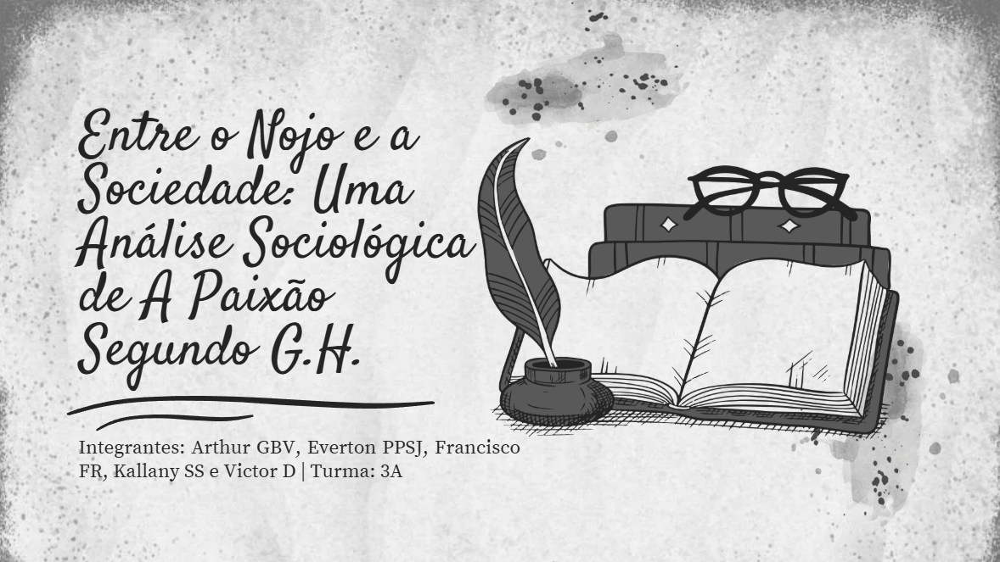

1º Trimestre

Atividade Avaliativa: A Paixão segundo G.H
Análise estruturada da obra literária *A Paixão segundo G.H.*. A atividade envolveu uma explanação em sala sobre a narrativa, personagens e temas centrais, seguida pela organização de um trabalho avaliativo desenvolvido de forma crítica, coerente e fundamentada para compreender a fundo as características da obra.
Competências e habilidades trabalhadas: H4 e H22.
ACESSAR ATIVIDADE
Atividade de Aula: Game Literário (Wordwall)
Produção de um game literário coletivo utilizando a plataforma Wordwall. O projeto integrou criatividade e técnicas digitais na criação de um jogo interativo com perguntas e desafios baseados nas obras literárias estudadas, estimulando o planejamento em grupo, a divisão de tarefas e a aprendizagem colaborativa.
Competências e habilidades trabalhadas: H15.
ACESSAR JOGO